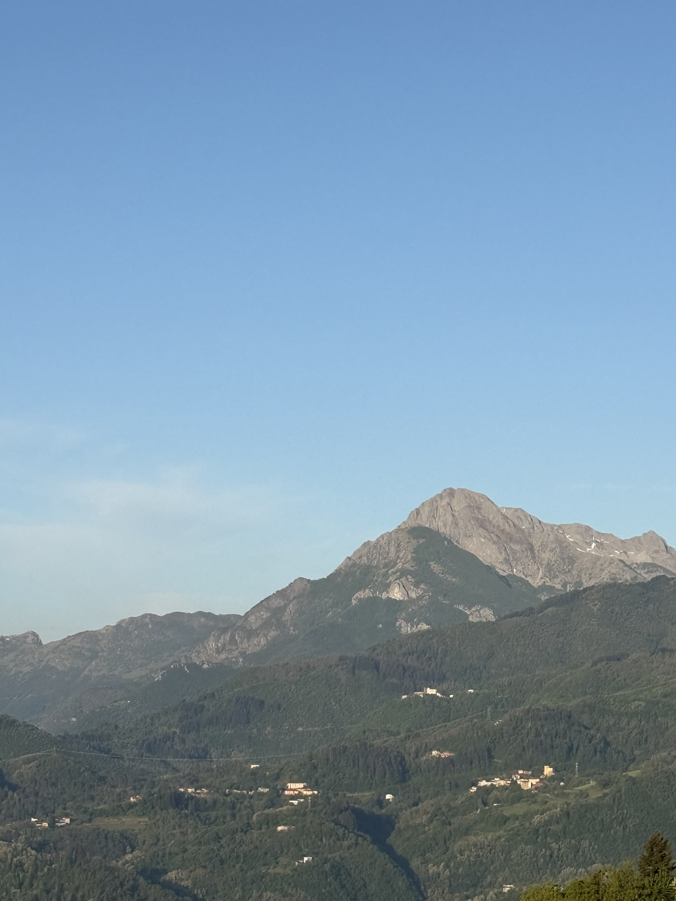

At the end of April I travelled to Lucca, in Tuscany, for the Gordon Research Conference on Image Science 2026, held at the Renaissance Tuscany Il Ciocco — a beautiful setting up in the hills with some truly stunning scenery. The meeting runs in two parts: the Gordon Research Seminar (GRS) beforehand, aimed mainly at early-career researchers, followed by the main conference.
The seminar was a real highlight — a smaller, informal setting where I had a lot of fun and some excellent discussions with fellow early-career researchers. The conference that followed was just as rewarding: hearing talks from leaders in the field was hugely encouraging, and the poster sessions sparked some of the most insightful conversations of the week.
As the conference came to a close, what stayed with me most was the community — five days in a remote spot really does build camaraderie, and I came away having made some great friends along the way. I'm also honoured to have been elected by the community to co-chair the next Gordon Research Seminar on Image Science, and I'm very much looking forward to what's ahead.
Discuss by email →
Working with solvatochromic dyes like Nile Red and Laurdan at sub-zero temperatures throws up some surprising challenges. How does membrane fluidity change if you cool mammalian cells toward 0°C? And are the changes we see from the dye or actual fluidity changes? Lowering temperature also affects how the dye partitions and reports.
The peak emission wavelength of solvatochromic dyes shifts with the polarity of their local environment. In disordered membranes, the fluorophore sits in a more polar environment and shifts one way; in ordered membranes, it shifts the other. The problem at very low temperatures is that most mammalian membrane lipids start to phase-separate or gel, and the spectral shift you'd normally interpret as "ordered membrane" now partially reflects a kinetic freezing-in of the dye rather than true equilibrium partitioning.
So if I prepare membrane models and image them at low temperature, it should be interpretable of how the dye is behaving on the membrane at cold and we can use this as the calibration of membrane dyes at cold. More notes to follow as this project develops.
Discuss by email →
Our preprint on single-molecule flow cytometry (smFC) is now live on bioRxiv. We integrated high-NA oblique plane microscopy with microfluidics to push flow cytometry sensitivity down to single molecules on live cells — enabling detection of as few as ~2 labelled receptors per cell.
The key insight was combining optical sectioning from the OPM light sheet with super-bright, large Stokes-shift fluorophores to overcome cellular autofluorescence, which is the main bottleneck in conventional flow cytometry at low expression levels. We validated the system on c-kit receptor distribution in triple-negative breast cancer cells and found a subpopulation invisible to standard FC. Future work will extend smFC to multicolour detection and higher throughput. Feedback very welcome!
Read the preprint on bioRxiv →
I was awarded the Best Poster Prize at the Smart Microscopy Symposium held at EPFL, Lausanne in October 2024, for work on PiFocus — our low-cost, open-source active focus stabilisation system built around a Raspberry Pi and astigmatic infrared detection.
The symposium brought together a great mix of people working at the intersection of microscopy hardware, computational imaging, and biological applications. It was a genuine pleasure to present and discuss the work, and being recognised with the poster prize was a wonderful surprise. Many thanks to the organisers and jury at the EPFL BioImaging & Optics Platform.
Discuss by email →
The Your Entrepreneurs Scheme (YES) is a long-running competition, celebrating its 29th year in 2024, that challenges early-career researchers to develop hypothetical but plausible start-up ideas addressing global challenges.
Our entry tackled a genuinely underserved problem: the notoriously poor quality of decaffeinated coffee. Caffinity Biotech's R&D concept used protein design and microbial fermentation to convert caffeine into a non-stimulatory molecule, preserving flavour while removing the kick. We took our pitch from initial concept all the way through to a business-plan-ready proposal, presenting first at the regional Food & Drink category heat at Campden BRI, and then at the national showcase at the Royal Society, London.
It was a hugely rewarding experience, learning how to translate scientific ideas into something investable, and collaborating with brilliant teams across disciplines. Before YES24, I genuinely wouldn't have known where to start with a start-up challenge. Now I feel far more equipped, and genuinely excited, for real-world entrepreneurial opportunities.
Full team: Darcey Ridgway-Brown, Lawrence Collins, Amir Rahmani, and Brian Mantilla (all from the Astbury Centre, University of Leeds).
Discuss by email →
A recurring debate in imaging labs: should you build your own microscope or buy a commercial system? The honest answer depends on what question you are trying to answer, but I've come to think the framing itself is slightly wrong.
Commercial systems are optimised for robustness and reproducibility. They are excellent for asking well-defined questions on well-behaved samples. The moment your sample or your question is at the edge of what the instrument was designed for — flowing cells, sub-zero temperatures, nanometre-precision focus over long timescales — you are fighting the machine rather than using it.
Building your own system is slow and often frustrating, but it forces you to understand every degree of freedom in the measurement. When something goes wrong (and it always does), you know where to look. More importantly, when you want to do something the machine was not designed for, you can. My working rule: buy commercial for routine measurements, build custom for novel modalities. And never underestimate how much you learn from building.
Discuss by email →


I gave a flashtalk at the European Light Microscopy Initiative (ELMI) 2024 meeting in Liverpool, on active focus stabilisation using astigmatism with universal objective lens compatibility and sub-10 nm precision — the work behind PiFocus.
ELMI is one of those conferences where the community feel is genuinely warm: good science discussions, old friends reconnected, new ones made. A football match between delegates somehow made it onto the programme too. And a few months later I discovered I'd been photographed mid-talk and featured in the September 2024 issue of infocus Magazine's ELMI 2024 Picture Special — which I did not notice at the time.
Discuss by email →


In November 2023 I spent a day as a science host aboard Moon Palace — a beautifully converted double-decker bus turned mobile observatory, parked up in Leeds. Talking to kids and parents about space, planets, telescopes, and the joy of seeing massive objects through optics. And naturally, I couldn't resist sneaking in some microscopy talk too.
The bus is kitted out with a rooftop satellite dish, a mounted telescope, binoculars, and screens showing Jupiter and Earth — a wonderfully tactile backdrop for talking to curious kids and parents about space, planets, and the joy of seeing distant objects through optics.
Discuss by email →
I took part in Be Curious, the University of Leeds' annual public research festival, on 7 May 2022. Our stand — solar-powered racing cars vs. plants — let families explore how photovoltaics and photosynthesis both harvest energy from light.
Visitors — mostly families with young children — could race small solar-powered cars on a track and then compare how their tiny photovoltaic cells convert sunlight into motion versus how plant chloroplasts convert it into chemical energy through photosynthesis. The side-by-side comparison sparked some genuinely great conversations about energy efficiency, evolution, and why plants are green. It's always a pleasure to do this kind of outreach. Explaining the physics of light to a seven-year-old is one of the best tests of whether you actually understand it yourself.
Discuss by email →